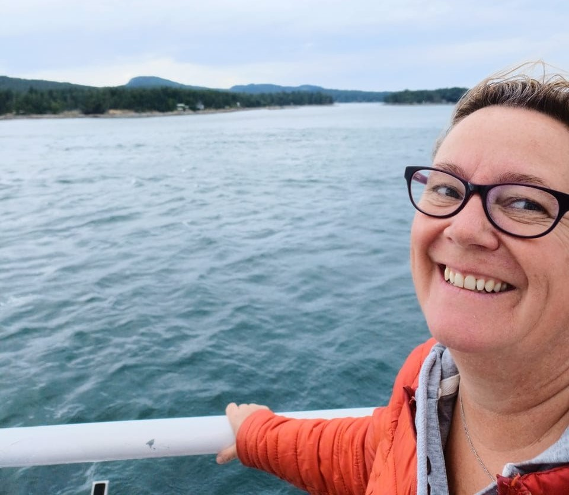
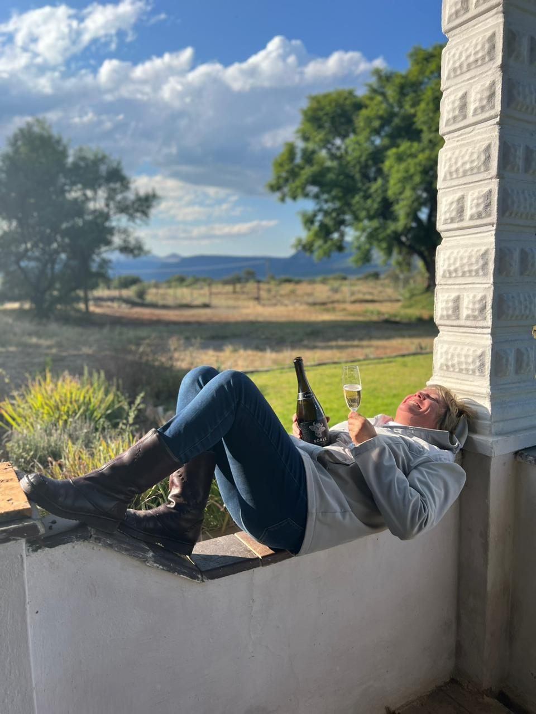
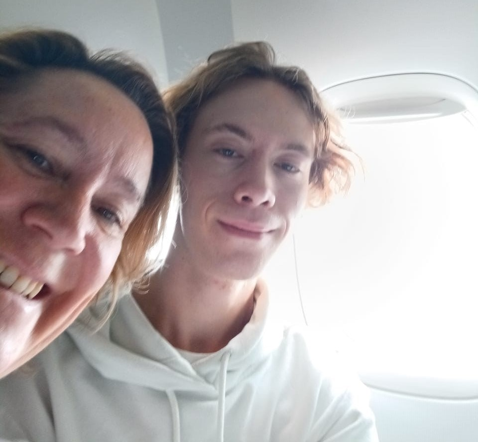
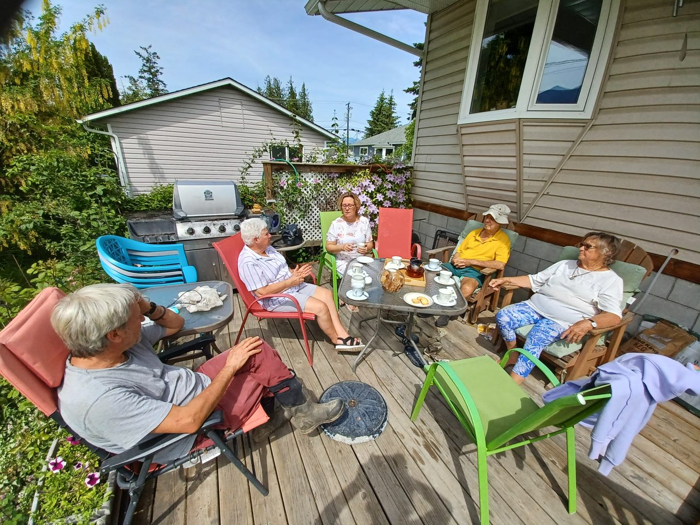
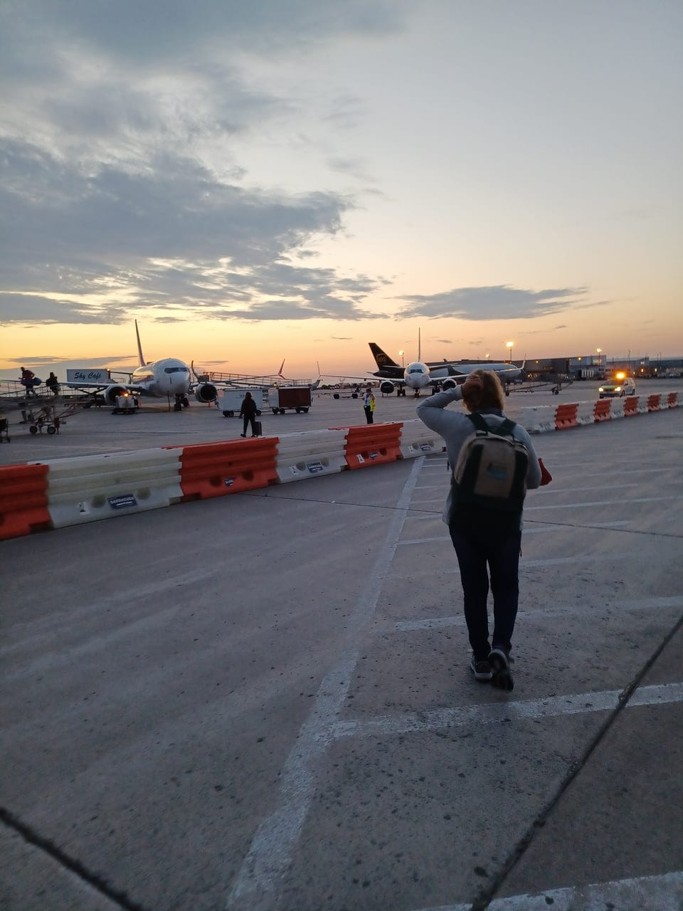

Mother
Dearest mother I hope you are having a wonderfull birthday! (and that dad is getting a little bit of attension for fathers day too)
I wish I could have done more but unfortionatly in Cape Town we dont celibrate our mothers birthday(it's a bit of a confusing culture thing) so instead i figured id take the time to make you a vary drawn out birthday card in the form of a webpage. Because it isnt a real card I can add as many photos as I want and i can also make it as long winded as possible. (although I don't have many photos of you, but i tried to include some of your family as well(i am also trying my best to make this as phone friendly as possible, but it is very hard(I also don't have spell check but i am tying my best to spell right))) To start things off, here is a picture of one of your favoret things, a rose from your rose garden.

My favoret mother, you are my most preferd mother. although the few photos I have were taken in canada, I still think back on our adventures there and I am very happy that I got to meet all of your family with you, I think you were probably the best person for the job. Included is a picture of the beginning of our adventure through that unholly land.
although things dont always go in dirrections we dont anticipate, I still loved spending time with your family and getting to know them and i will still be trying my best to stay in contact with them.
Despite your best efforts mother, you never seem to get credit for a lot of the thing which you do, i just wanted to make sure you know that we apreaciate everything which you do for us even though we dont always say it. your thoughts and wisdome have lead all of us down an incredible path which i can guarente that we do not regret, one could even say that we enjoy the things which you have done. we appreciate evry seccond you sepnd baking, sewing, gardening, meal preping and all the many other things you do for us. we especially apreciate the foot rubs (I'm sure dad would love one as a fathers day gift) in this family, we all love you.
Mother, I'll say it again, you are my favourite mother, and I do love you. I hope you have a wonderfull year! with love from all of us.